Retrouvez un plan d'eau vivant, équilibré et durablement entretenu
AQUAKLIN restaure progressivement l'équilibre biologique des étangs, mares, bassins naturels et petits plans d'eau — en s'attaquant aux causes du déséquilibre, pas seulement à ses symptômes.
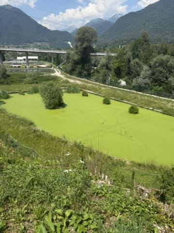
Un déséquilibre progressif, rarement anodin
Les petits et moyens plans d'eau ne disposent pas toujours du volume, de la profondeur, du renouvellement d'eau ou de la biodiversité nécessaires pour maintenir naturellement leur équilibre. Avec le temps, l'accumulation de matières organiques, la stagnation de l'eau, la hausse des températures et le développement excessif de certains végétaux dégradent progressivement le milieu.
- Prolifération de lentilles d'eau
- Accumulation de matières organiques et de vase
- Odeurs désagréables
- Eau stagnante, trouble ou appauvrie en oxygène
- Déséquilibre du pH et de la minéralité
- Développement excessif d'algues
- Disparition progressive de la vie aquatique
- Mortalité de poissons lors des périodes chaudes
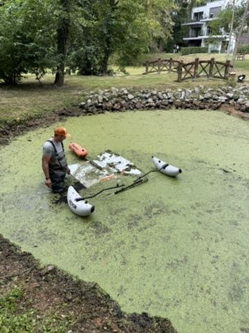
AQUAKLIN propose une approche globale pour restaurer progressivement l'équilibre biologique des étangs, mares, bassins naturels et petits plans d'eau. L'objectif n'est pas de masquer temporairement les symptômes, mais d'en identifier les causes et de mettre en place une solution durable, adaptée à chaque site.
Changement climatique, canicules et risque de prolifération des moustiques
Avec le réchauffement climatique et la multiplication des épisodes de canicule, les petits et moyens plans d'eau sont soumis à des pressions croissantes.
Une eau sous pression
Une eau plus chaude contient moins d'oxygène disponible, tandis que les longues périodes de chaleur accélèrent la décomposition des matières organiques et peuvent favoriser certaines proliférations végétales.
L'allongement des périodes chaudes et la douceur croissante des hivers créent aussi des conditions plus favorables à l'installation de certaines espèces de moustiques en Europe. Les eaux stagnantes, peu oxygénées et riches en matières organiques peuvent constituer des milieux favorables à leur développement.
Un entretien qui dépasse l'esthétique
Les moustiques ne représentent pas uniquement une nuisance : à l'échelle mondiale, ils figurent parmi les animaux les plus dangereux pour l'être humain en raison des maladies qu'ils peuvent transmettre. Les autorités renforcent progressivement la surveillance et la prévention.
Un plan d'eau naturel correctement conçu, brassé, oxygéné, végétalisé et biologiquement équilibré peut au contraire accueillir des prédateurs naturels des larves de moustiques. L'objectif n'est pas de supprimer toute présence de moustiques, mais de réduire les conditions favorisant leur développement excessif.
Une intervention construite en plusieurs étapes
Chaque plan d'eau est différent. La stratégie AQUAKLIN est établie après une première visite, une analyse de l'eau et l'observation de son environnement.
Analyse et diagnostic du plan d'eau
AQUAKLIN réalise une analyse de l'eau à l'aide de son outil de diagnostic et étudie l'environnement du site pour comprendre l'origine du déséquilibre.
- pH, dureté, conductivité, température
- Oxygène dissous et potentiel redox
- Nitrites et autres composés azotés
- Matière organique, lentilles, algues, végétaux envahissants
- Profondeur, volume, alimentation et renouvellement de l'eau
- Exposition, arbres, ruissellement, épaisseur de vase
Deux façons d'obtenir votre diagnostic.
1. Passer par Aquiflor. Vous pouvez vous rendre directement chez Aquiflor avec un échantillon de votre eau — l'analyse y est gratuite. Il vous suffit ensuite de nous communiquer les résultats : ils sont intégrés dans notre outil de diagnostic et de recommandation.
2. Passer directement par Klinkup. Vous pouvez aussi faire appel directement à nous : Klinkup se charge alors de l'ensemble de la démarche sur place, du prélèvement à l'analyse.
Quelle que soit l'approche choisie, vous restez libre de choisir votre matériel, la faune, la flore ainsi que les décorations ou accessoires souhaités — chez Aquiflor, avec qui AQUAKLIN travaille exclusivement pour ces produits. Klinkup, partenaire certifié d'Aquiflor, se charge ensuite de leur installation et de leur configuration.
Élimination physique des lentilles d'eau
Lorsqu'un plan d'eau est entièrement recouvert de lentilles, il est indispensable d'en retirer mécaniquement une partie importante à l'aide de systèmes de récolte adaptés à la configuration du site.
- Rouvrir la surface de l'eau
- Rétablir les échanges gazeux avec l'atmosphère
- Permettre à la lumière de pénétrer à nouveau
- Retirer une partie des nutriments absorbés
- Éviter la décomposition d'une masse végétale trop importante
- Préparer le plan d'eau aux étapes suivantes
Les lentilles récupérées sont égouttées et évacuées ; lorsque leur qualité et leur origine le permettent, une valorisation en compost ou en matière organique peut être envisagée (voir la valorisation des lentilles récoltées). Sans correction des causes du déséquilibre, elles peuvent toutefois rapidement recoloniser la surface.
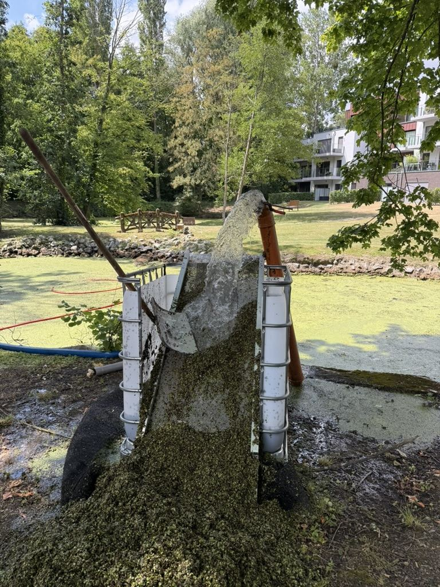
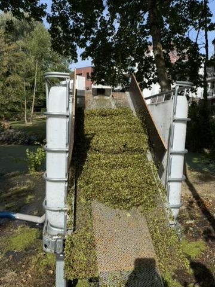
Mise en mouvement et oxygénation de l'eau
Les lentilles d'eau se développent particulièrement bien dans les eaux calmes riches en éléments nutritifs. La remise en mouvement de l'eau est une étape essentielle du traitement. En collaboration avec Aquiflor, AQUAKLIN propose la vente ou la location d'équipements, leur dimensionnement, leur pose, leur réglage et le suivi de l'oxygénation.
- Aérateurs de surface
- Pompes à air et diffuseurs immergés
- Mélangeurs d'eau
- Fontaines d'aération
- Systèmes combinant brassage et oxygénation
Le client choisit librement son matériel — filtres, pompes, aérateurs, fontaines — et Klinkup, partenaire certifié d'Aquiflor, se charge de l'installation, de la configuration et du réglage.
Cas de rattrapage : un étang fortement dégradé. Il arrive que l'oxygène reste insuffisant et le potentiel redox très négatif malgré une aération déjà en place — signe que les sédiments manquent encore d'oxygène, même si la colonne d'eau semble correcte en surface. Dans ce cas, AQUAKLIN peut proposer la location temporaire d'un aérateur supplémentaire de forte puissance, en général pour une durée d'environ une semaine, le temps de relancer l'oxygénation avant de poursuivre le traitement.
Ce rattrapage suit une séquence précise : maintenir l'aération existante en continu ; renforcer temporairement l'oxygénation par la location d'un aérateur additionnel ; stabiliser le milieu par un apport minéralisant ; laisser le milieu se stabiliser quelques jours ; activer biologiquement le milieu (enzymes puis bactéries) ; retirer mécaniquement les lentilles et la biomasse restante ; puis suivre régulièrement l'oxygène, le potentiel redox, les phosphates et l'azote pour ajuster le traitement dans la durée.
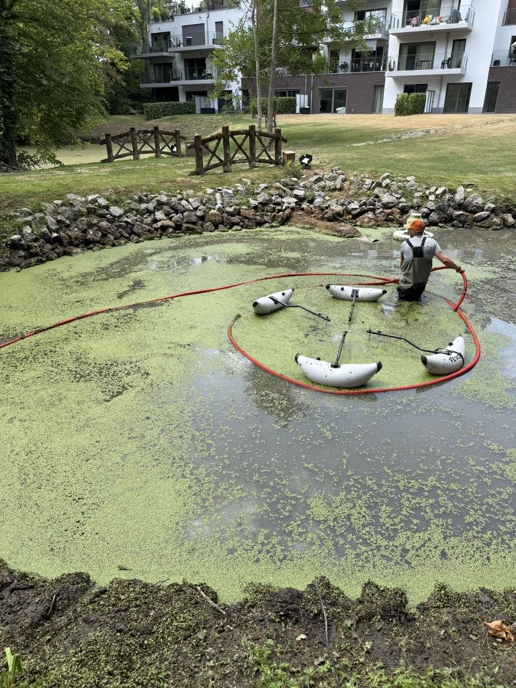
Reminéralisation et amélioration du milieu
Certains plans d'eau présentent une minéralité insuffisante ou un environnement peu favorable à une vie bactérienne équilibrée. Un composé minéralisant adapté peut alors être intégré au programme, dosé selon le volume, la qualité de l'eau, la température et le niveau d'oxygénation.
- Améliorer la minéralité du milieu
- Soutenir la stabilité des paramètres de l'eau
- Créer un support favorable à la fixation des bactéries
- Favoriser la dégradation progressive de la matière organique

Traitement enzymatique — une spécialité Klinkup
Les enzymes sont des catalyseurs biologiques : elles fragmentent certaines matières organiques complexes en éléments plus facilement assimilables par les micro-organismes naturellement présents dans le milieu.
- Résidus végétaux et feuilles mortes
- Dépôts organiques et matières en suspension
- Certains biofilms
- Composés organiques accumulés à l'interface avec les sédiments
Le traitement enzymatique ne remplace pas l'oxygénation, le brassage, l'enlèvement mécanique ou l'activité bactérienne : il intervient comme un outil complémentaire dans un programme global.
Une action complémentaire entre enzymes et bactéries
Les enzymes commencent par fragmenter certaines molécules organiques complexes ; les bactéries utilisent ensuite plus facilement les composés obtenus. Les formulations destinées aux plans d'eau sont sélectionnées spécifiquement pour un usage aquatique — sans lien avec les produits enzymatiques destinés aux toitures ou façades.
- Remise en mouvement et oxygénation de l'eau
- Enlèvement des végétaux envahissants et déchets accessibles
- Apport de minéraux favorisant la vie microbienne
- Application d'une formulation enzymatique adaptée
- Ensemencement en bactéries sélectionnées
- Suivi de l'oxygène dissous, du redox et de la qualité de l'eau
Apport de bactéries sélectionnées
Lorsque les conditions d'oxygénation et de minéralité sont suffisamment favorables, des bactéries adaptées peuvent être introduites — toujours intégrées à une démarche globale, jamais de manière isolée.
- Dégrader la matière organique
- Limiter l'accumulation de résidus au fond
- Soutenir le cycle naturel de l'azote
- Réduire les nutriments disponibles pour algues et lentilles
Plantation de végétaux adaptés
Les végétaux aquatiques jouent un rôle important dans l'équilibre d'un plan d'eau. AQUAKLIN conseille le propriétaire dans le choix et la répartition des plantes de berge, de zone peu profonde, oxygénantes immergées et flottantes contrôlées — en étroite collaboration avec Aquiflor, pour des espèces adaptées à la fois à l'ornement et au traitement naturel de l'eau.
- Absorber une partie des éléments nutritifs
- Concurrencer les algues et les lentilles d'eau
- Apporter de l'ombre et stabiliser les berges
- Offrir des zones de refuge à la faune et favoriser la biodiversité
Introduction progressive de poissons adaptés
Le choix des poissons est réalisé en étroite collaboration avec Aquiflor. Dans certaines situations, des poissons herbivores ou omnivores peuvent contribuer à contrôler les repousses de lentilles d'eau. Toute introduction est progressive, réalisée uniquement après vérification de la qualité de l'eau, de la capacité d'accueil du plan d'eau et des règles applicables — en particulier la présence éventuelle d'espèces protégées et les réglementations régionales. Deux profils de poissons interviennent, à des moments différents du traitement.

Une espèce très résistante
Tant que l'eau reste pauvre en oxygène, l'introduction éventuelle d'une espèce très résistante peut être étudiée — la tanche ou le carassin sont des profils souvent cités pour leur tolérance aux eaux peu oxygénées. Le nom exact de l'espèce retenue reste à confirmer avec Aquiflor avant toute intervention.
Illustration : tanche (Tinca tinca) — photo Viridiflavus, Wikimedia Commons, CC BY-SA 3.0

Carpes herbivores
Une fois le taux d'oxygène dissous et le potentiel redox stabilisés à un niveau satisfaisant, l'introduction de carpes herbivores peut être envisagée pour participer à la consommation des lentilles. Leur nombre est calculé avec soin : une densité excessive pourrait provoquer un nouveau déséquilibre.
Photo : Peter Halasz (Pengo), Wikimedia Commons, CC BY-SA
Suivi et entretien régulier
Le rééquilibrage d'un plan d'eau est un processus progressif, pas une intervention ponctuelle. AQUAKLIN assure un suivi régulier des paramètres de l'eau, des équipements, des apports biologiques et de la faune, avec des recommandations saisonnières.
Une fois l'équilibre retrouvé, un programme d'entretien préventif permet de conserver les résultats obtenus et d'intervenir avant qu'une nouvelle prolifération ne s'installe.
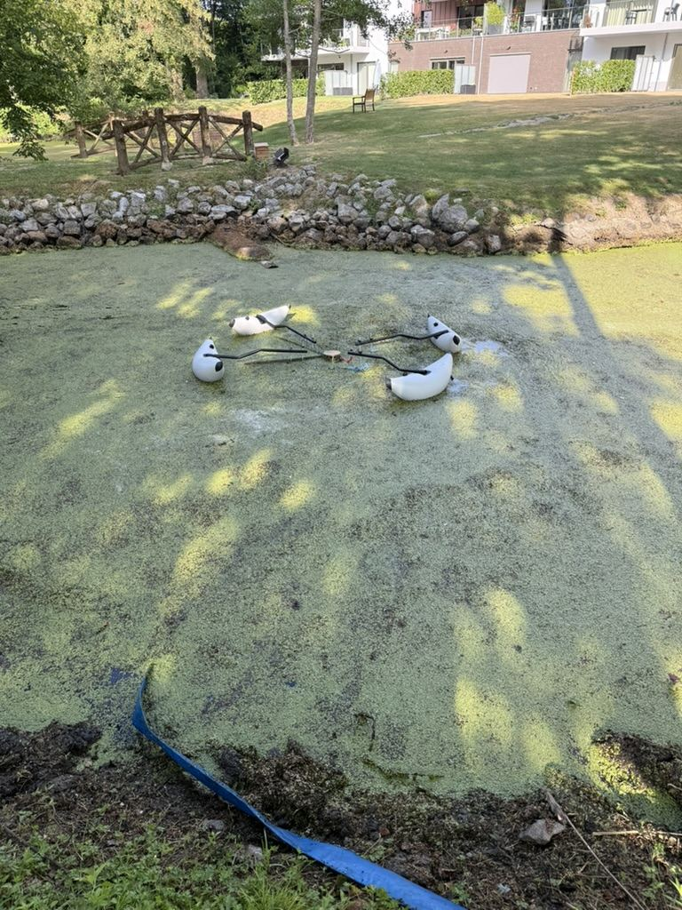
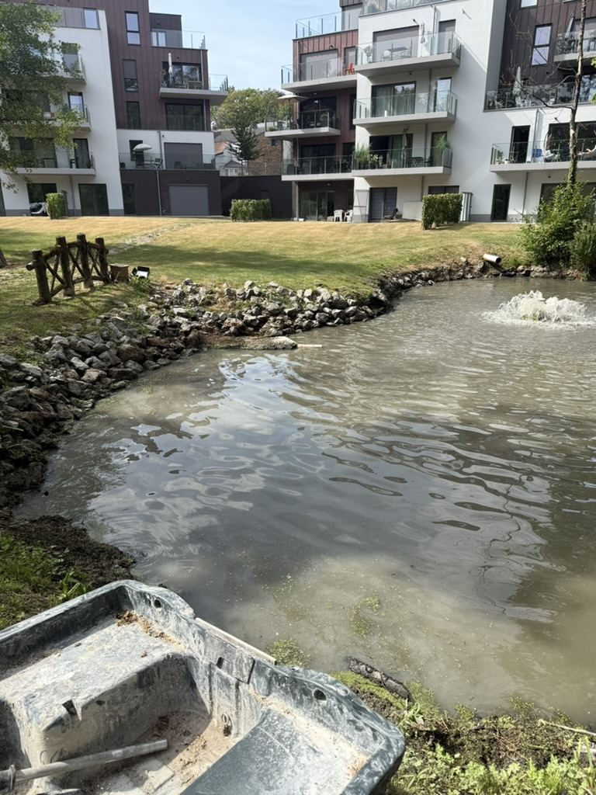
Que deviennent les lentilles d'eau récoltées ?
La gestion de la biomasse récoltée fait partie intégrante de l'intervention AQUAKLIN, avec deux approches possibles selon la situation du site.
Valorisation locale
Lorsque le propriétaire dispose d'un espace adapté, AQUAKLIN recommande de conserver les lentilles d'eau sur place. Cette solution est la plus économique, la plus écologique et évite les coûts de transport et de traitement.
Les lentilles sont riches en matière organique, en azote, en phosphore et en potassium. Elles constituent un excellent activateur de compost, mais elles ne doivent pas être stockées seules car leur forte humidité peut provoquer un échauffement, une fermentation anaérobie, des odeurs et des pertes d'azote.
Recommandations
- Égoutter les lentilles après leur récolte
- Les mélanger avec une matière riche en carbone : BRF, copeaux de bois, feuilles mortes, paille ou déchets de taille
- Éviter un tas constitué uniquement de lentilles
- Privilégier plusieurs petits tas bien aérés
- Ajouter un peu de terre ou de compost mûr pour accélérer la colonisation biologique
- Après maturation, utiliser le compost sur les plantations, massifs, haies ou arbres de la propriété
Cette approche permet de restituer localement les nutriments prélevés dans le plan d'eau et s'inscrit dans une logique d'économie circulaire.
Évacuation de la biomasse
Lorsque le client ne souhaite pas conserver les lentilles, AQUAKLIN organise leur évacuation.
- Utilisation de conteneurs adaptés fournis par un prestataire local
- Facturation au prix de revient des conteneurs réellement utilisés
- Le volume exact ne peut être estimé avant le chantier, en raison de la variabilité de la biomasse
- Orientation vers une filière de valorisation organique — compostage, méthanisation ou autre filière agréée selon les possibilités locales
Marchés publics
Dans le cadre des marchés publics, l'évacuation complète des végétaux est souvent exigée. Les coûts de collecte, de transport et de traitement sont alors détaillés séparément dans l'offre.
Perspectives
À moyen terme, AQUAKLIN souhaite participer à des projets de recherche sur la valorisation des lentilles d'eau, afin d'identifier des filières durables, sans compromettre la sécurité sanitaire ni le respect de la réglementation.
Une intervention en images
Diagnostic, fabrication des équipements, récolte et retour à l'équilibre : quelques étapes d'un chantier AQUAKLIN.
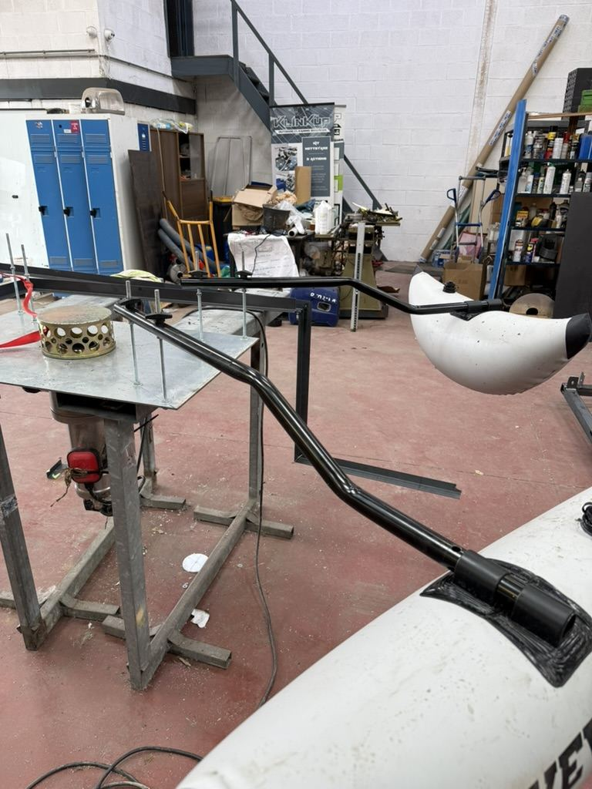
Assemblage sur-mesure des flotteurs en atelier
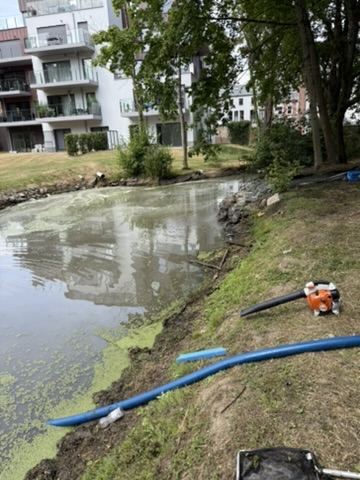
Mise en place du dispositif de récolte
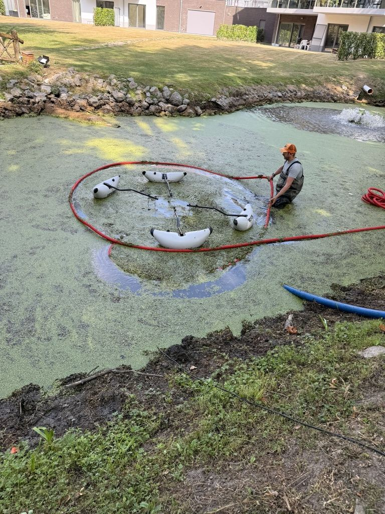
Récolte des lentilles d'eau en cours
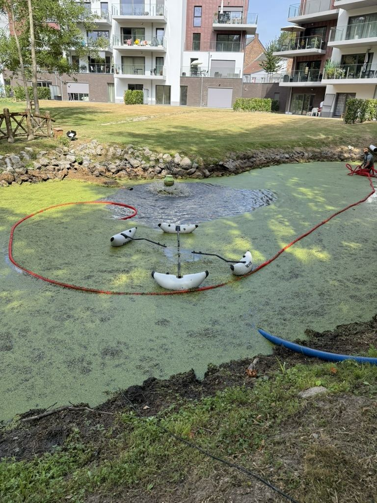
Le dispositif de récolte en action
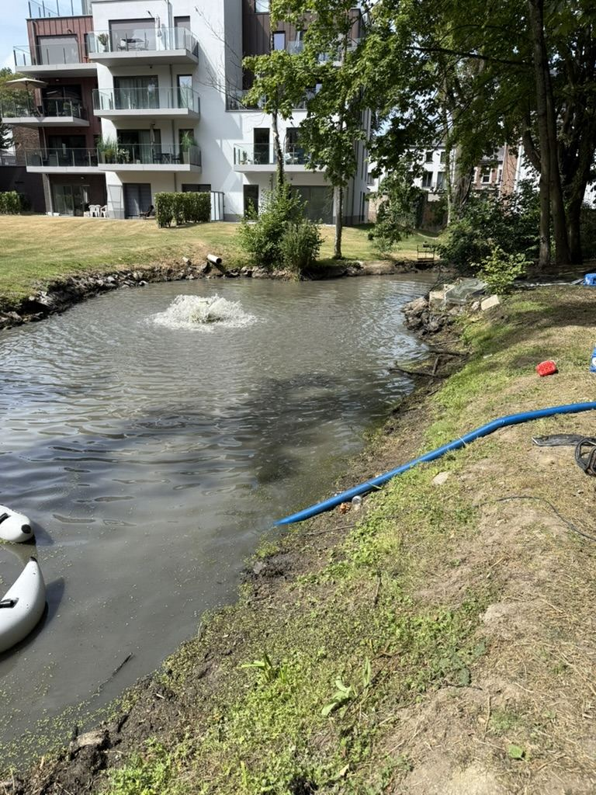
Le système d'aération en fonctionnement
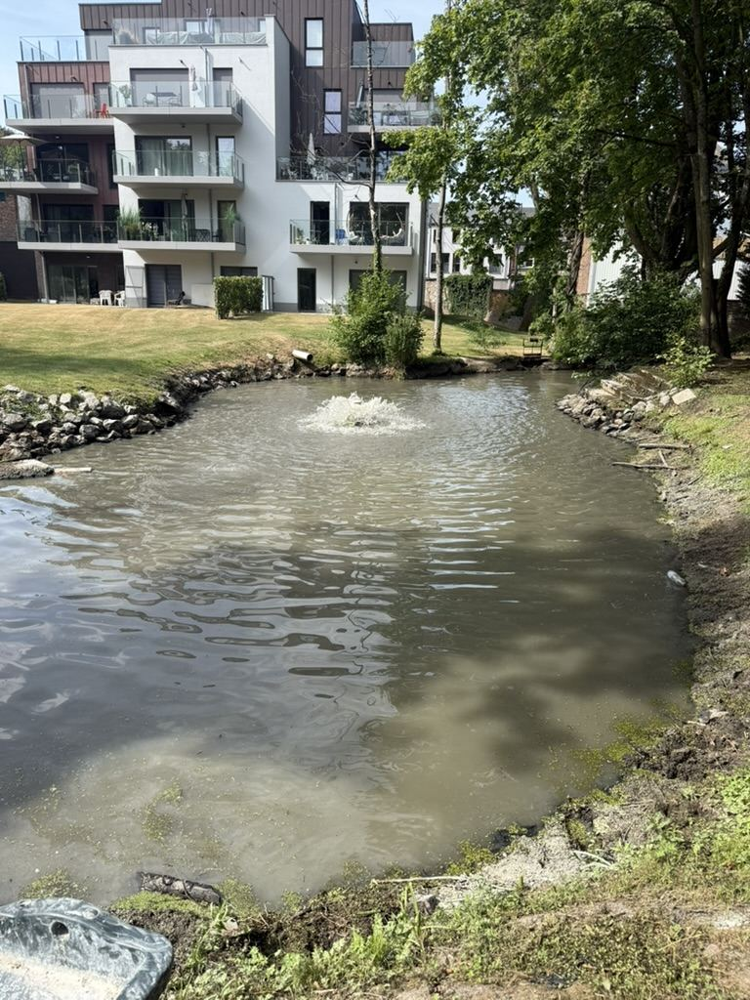
Une eau retrouvée, claire et oxygénée
À qui s'adressent les services AQUAKLIN ?
AQUAKLIN intervient principalement sur les petits et moyens plans d'eau qui ne parviennent plus à maintenir naturellement leur équilibre.
Pourquoi choisir AQUAKLIN ?
- ✓Analyse de l'eau
- ✓Expertise technique
- ✓Intervention mécanique
- ✓Oxygénation et brassage
- ✓Reminéralisation
- ✓Traitement enzymatique
- ✓Apport de bactéries
- ✓Gestion des végétaux
- ✓Gestion raisonnée des poissons
- ✓Suivi et entretien régulier
- ✓Partenariat certifié avec Aquiflor
Cette combinaison permet d'agir à la fois sur les symptômes visibles et sur les causes profondes du déséquilibre.
Notre démarche privilégie les interventions physiques, mécaniques, biologiques et écologiques, en évitant autant que possible les traitements chimiques agressifs ou les solutions qui ne produisent qu'un effet temporaire.
Pour le choix des poissons, des végétaux d'ornement et de traitement naturel de l'eau, ainsi que des équipements — filtres, pompes... —, AQUAKLIN travaille exclusivement avec Aquiflor (www.aquiflor.be). Vous restez libre de choisir votre matériel, la faune, la flore et les décorations souhaitées auprès d'Aquiflor : Klinkup, partenaire certifié d'Aquiflor, se charge ensuite de leur installation et de leur configuration.
Votre plan d'eau perd son équilibre ?
Recouvert de lentilles, mauvaise odeur, manque d'oxygène... Contactez-nous pour organiser une première visite et une analyse AQUAKLIN.
- Les interventions prioritaires
- Les équipements conseillés
- Les travaux d'installation
- Les produits et apports biologiques nécessaires
- Un calendrier d'intervention
- Une formule de suivi ou d'entretien régulier
Demande de diagnostic AQUAKLIN
Décrivez votre plan d'eau, nous vous recontactons pour organiser une visite.